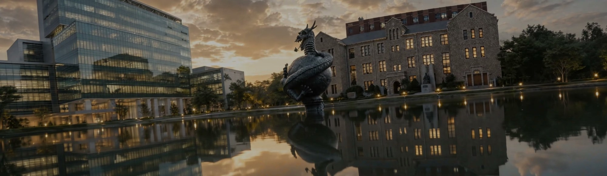
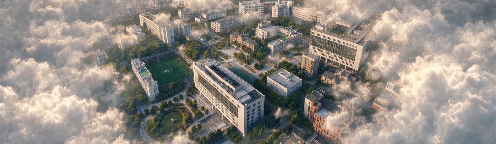
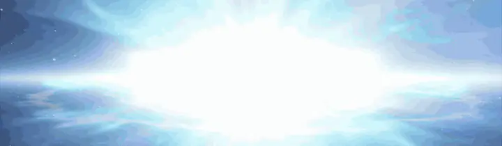
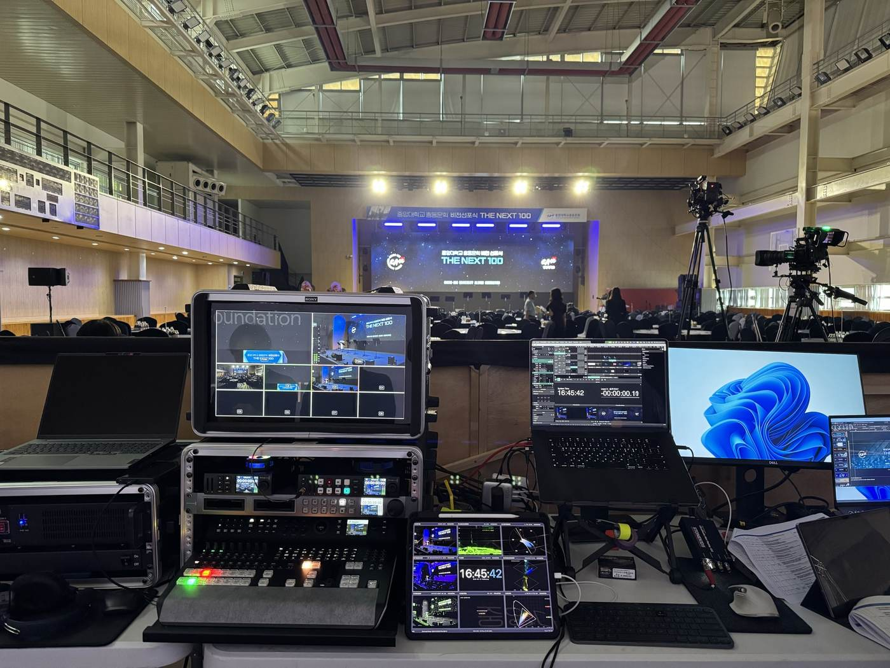
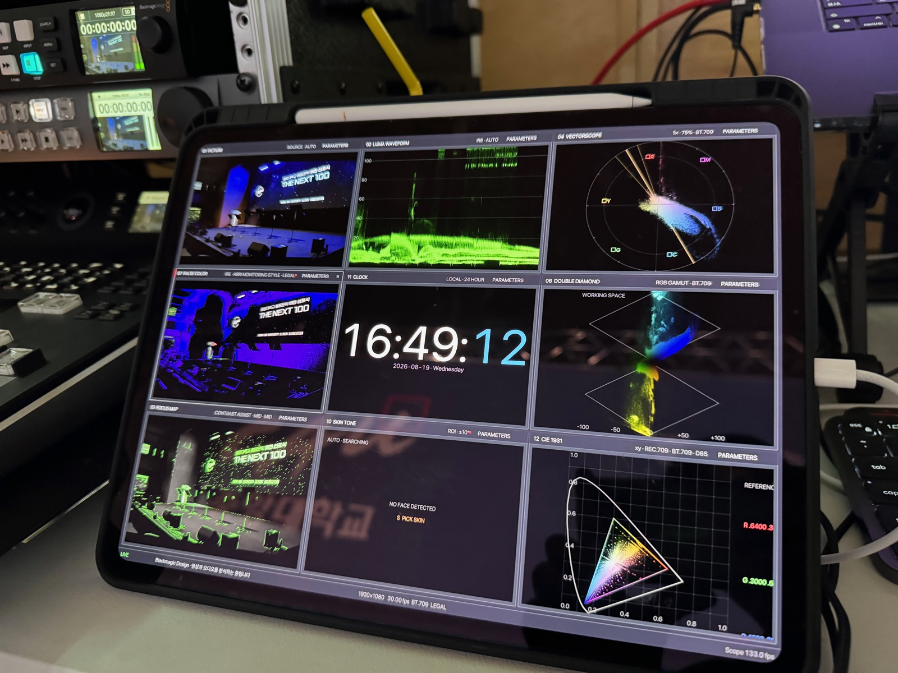
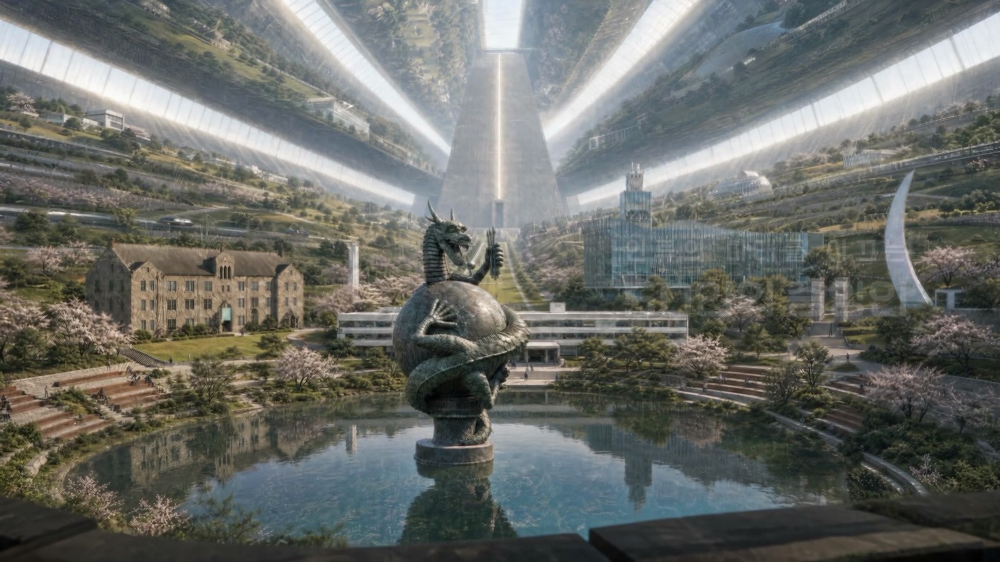
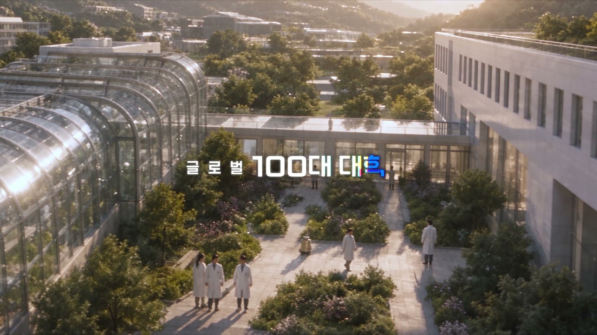
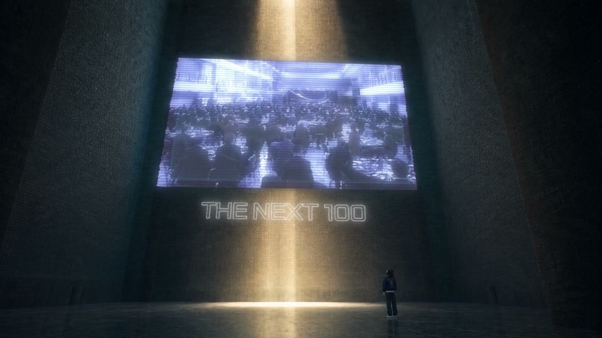
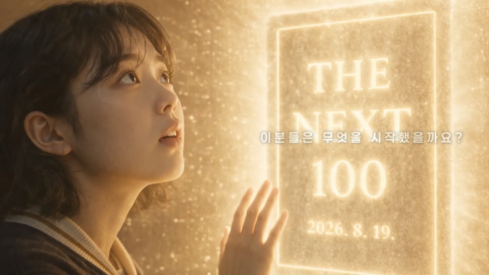
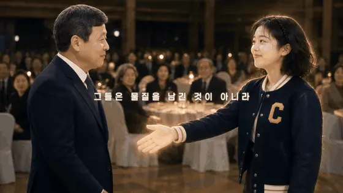

01 — 청룡연못
우리는 중앙대를 다닌 적이 없습니다
첫 주문은 이것이었습니다. "청룡연못에서 문을 열어주세요."
중앙대 동문이라면 누구나 아는 연못입니다. 문제는 우리가 중앙대를 다닌 적이 없다는 것이었습니다. 동문들의 기억 속에 있는 그 연못과 청룡상을, 그 기억이 없는 사람이 그려야 합니다. 상징물 하나를 잘못 이해하고 그리면 동문들의 눈에는 바로 보입니다. 여기가 어디지. 원래랑 다른데. AI로 만들었네.
그 한마디가 나오는 순간 오프닝은 실패합니다. 그래서 제작 기간의 상당 부분을 그리는 일이 아니라 찾아보는 일에 썼습니다. 연못의 사진과 영상 자료를 모으고, 동문들이 이 장소를 어떤 시선으로 기억하는지부터 이해하려 했습니다.

오프닝의 첫 장면. 동문들이 아는 그 연못이어야 했습니다
02 — 여섯 개의 의도
연출 설계는 여섯 칸으로 나뉘어 있었습니다
이 행사의 연출 설계에는 뼈대가 있었습니다. 오프닝 「THE NEXT 100」은 감정·상징·기대감, 인사말은 감사·초대·격려, 「VISION 2030 Plus」는 17개 분과가 3년간 할 일, 「CENTENNIAL 2116」은 왜 지금 시작해야 하는가, 발전재단은 그것을 지속시킬 구조, 그리고 선언. 여섯 순서가 각자 다른 의도를 맡아, 같은 말을 반복하지 않게 짜여 있었습니다.
우리 영상 세 편은 그 설계 안에서 각자의 질문 하나씩을 받았습니다.
- 「THE NEXT 100」 오프닝 (60초) — 무엇을 느끼게 할 것인가
- 「VISION 2030 Plus」 (2분 15초) — 무엇을 할 것인가
- 「CENTENNIAL 2116」 (3분 12초) — 왜 지금인가
03 — 와우포인트
"행사 영상에는 무조건 와우포인트가 필요하다"
만들면서 계속 했던 말입니다. 식전 행사장의 웅성거림을 멈추게 하는 순간이 한 번은 있어야 합니다.
오프닝에서는 연못의 물살이 솟구쳐 타이틀이 되는 장면에 그 역할을 걸었습니다. 행사장 정면 LED가 일반 화면의 세 배 가까이 넓은 24:7이라, 그 화면을 꽉 채우는 와이드 장면들을 처음부터 따로 설계했습니다. 넓은 화면은 다루기 까다롭지만, 제대로 쓰면 그 화면에서만 나오는 압도감이 있습니다.

3840×1120, 화면비 24:7

타이틀이 꽂히는 프레임
04 — 콘솔 위의 우리 장비
콘솔 한쪽에는 우리가 만든 장비가 있었습니다
행사 당일, 영상을 만든 팀이 그대로 중계 콘솔에 앉았습니다. 사전영상 재생부터 LED 운용, 연단 양옆 스크린 송출까지 한자리에서 맡았습니다.
직접 개발한 중계 영상 모니터링 장비도 이날 함께 썼습니다. 송출 화면의 밝기와 색 상태를 실시간으로 확인하는 장비입니다. 본 행사 조명은 리허설 때와 달랐고, 행사 내내 이 장비로 화면 상태를 살폈습니다. 장비를 만든 과정은 따로 정리하겠습니다.

타임코드 16:45, 행사 두 시간 반 전의 콘솔입니다

그 장비입니다. 송출 화면과 밝기·색 상태가 한 화면에 뜹니다
05 — 백 년 뒤에서 온 인사
「CENTENNIAL 2116」은 100년 뒤에서 시작합니다
이 영상의 여정은 거꾸로 갑니다. 100년 뒤, 우주에 세워진 중앙대학교에서 출발합니다. 선배들의 헤리티지를 이어받은 미래의 캠퍼스를 지나, 주인공은 선배들의 영광을 기리는 파운더홀에 도착합니다. 그리고 그 모든 영광의 근원지로 거슬러 오르면 — 2026년 8월 19일, 바로 오늘의 행사장입니다. 백 년 뒤의 후배가 오늘의 동문들에게 건네는 인사. 그들을 기억합니다.

100년 뒤, 우주에 세워진 중앙대학교

선배들의 헤리티지를 이어받은 캠퍼스

선배들의 영광을 기리는 파운더홀

모든 영광의 근원지 — 2026. 8. 19.
이 영상에는 노래가 한 곡 들어갑니다. 만드는 동안 수없이 반복해 들었고, 행사가 끝난 지금도 가끔 머리에 맴돕니다.

「CENTENNIAL 2116」 중 — 맞잡은 손
행사는 선언문 낭독을 정점으로 기립박수 속에 끝났습니다. 그리고 고맙다는 말을 들었습니다. 이 영상들에는 AI로 만든 장면과 소리가 섞여 있습니다. 도구가 무엇이었든, 받는 사람에게 좋은 메시지로 닿았다면 그걸로 된 일입니다. 그날의 고맙다는 말이 그 답이었다고 생각합니다.
CREDIT
제작 — 스톤키즈
현장 중계(IMAG · 내빈 Still · Live) · 사전영상 3편 · 현장 VJ(LED 운용) · 현장기록영상